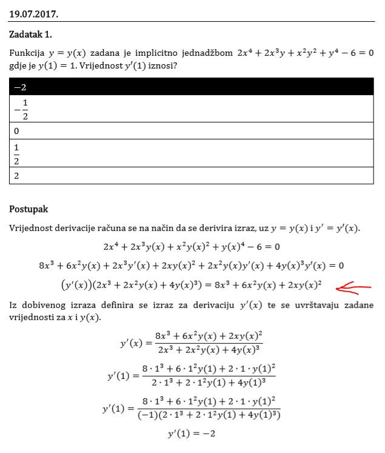

Zakaj su ovdje rješenja sa ILI sklopovima? Kaj nebi trebali biti sa I. Jer sa ILI će se resetirati odmah na početku 🤔
Direktor života ne, jer su resetovi aktivni na nisku razinu, tražiš maksterm za koji ćeš resetirat brojač.
Rješenja tog i ostalih zadataka iz digitalne sa zadnjih 6 prijemnih (2016.-2019.), sretno vama koji idete. https://1drv.ms/b/s!AjEOIngtYrYKlKwODac6ubu21ROXWA
btw digitalna definitivno nije među tim pitanjima koja se navodno ponavljaju.
AN5A Jesi ovdje ispustila minus dok si prebacivala na drugu stranu? Vidim da je na kraju sve pomnoženo sa (-1)

Direktor života moguće, na kraju sam negdje ubacila misteriozni minus tako bi rješenje trebalo biti točno ispravim pa uploadam novu verziju malo kasnije
https://easyupload.io/g8bq7r fizika porjesavani teorijski zadatci koji se znaju pojavit na razredbenom
Mylorad imas na fer2.net pa tamo pogledaj pod razredbeni
[obrisani korisnik] U tvoje vrijeme su se možda ponavljala pitanja i gradivo je bilo mim
moja rješenja za signale i sustave od 2019. do 2016.
sva rješenja osim prvog se slažu s odgovorima unesenim u google sheets
Kolko vidim pitanja iz fizike su identična onima sa rokova od te godine. Dakle pitanja iz razredbenog ispita 2019 godine odgovaraju pitanjima s rokova i završnih te iste godine i tako za svaku godinu. Ima li netko rješene zadatke iz fizike 1,2(ZI, MI, rokovi) od ove godine?
Burek sa sirom za fiz2E i R ima na ferwebu (teorija se razlikuje u 2,3 pitanja na kraju), a za fiz1 nema.jel se fiz1 uopce izvodila ove godine? E https://www.fer.unizg.hr/predmet/fiz2/materijali#%23!p_rep_10512!_-152043 R https://www.fer.unizg.hr/predmet/fiz2r/materijali#%23!p_rep_86628!_-139876
btw jel se ponavljaju zadaci ili teorija ili oboje?
Burek sa sirom Mislim da su se prošle godine samo 2 pitanja iz fizike ponovila ako se ne varam.
Burek sa sirom impresivno
Dell Sad sam provjerio sve međuispite, završne i rokove prošle akademske godine i samo se jedno pitanje iz FIZ1 ponovilo (svemirski brod, ljetni rok 2019.) a iz FIZ2 se nije ponovilo nijedno pitanje.
fiz2 ove godine, sve na jednom mjestu https://easyupload.io/kj4g5b
dammitimmad mislim da se fiz1(fer2) nije izvodila jer nema niti jedne obavijesti pa evo ove godine fiz(fer3) i prosle godine fiz1(fer2) sve skupa https://easyupload.io/dzghep
[obrisani korisnik] jel ides na prijemni sad ili si bio prijasnjih godina? Koje predmete si spremao i ako si prije izlazio koliko si imao bodova?
dammitimmad 2017 ljetni rok sam bio, spremio pitanja iz fizike, imao 5 odgovora
[obrisani korisnik] svaka cast, ali npr ja nemam muda toliko riskirat sa zivotom. Uvijek si mislim da iz te fizike mogu izvuc pizdariju. Znas fiziku super izgleda, ali nismo svi te srece haha
Ivančica FIZ2 se ponovilo jedno iz 2018 ako se dobro sjećam. Nije dosta učiti samo fizike iz tekuće akademske godine, barem zadnje 2.
Ivančica Stavio sam u tablicu za svako pitanje s kojeg je roka i godine koje sam pronasao. Vjerujem da se sva pitanja mogu pronac na nekim od rokova iz prijasnjih godina…
u prijasnjim ispitima, je odg pod e), ali tamo u nema ovaj ponudjeni odg pod d) plin ne razmjenjuje toplinu s okolinom. pazite na navlakusu
Mommie ZPF su trolovi, pazite kad zaokružujete dijagrame jer odgovor pod a) nije dijagram a nego je izmješano
Mommie Možeš možda reći gdje si našla te prezentacije za stanja i procese plinova, po netu svašta ima, ništa ukratko.
Je li možda netko zna/ima upute za rješavanje onih zadataka sa hazardima iz ARH-a, čine se jednostavni, a i često dolaze